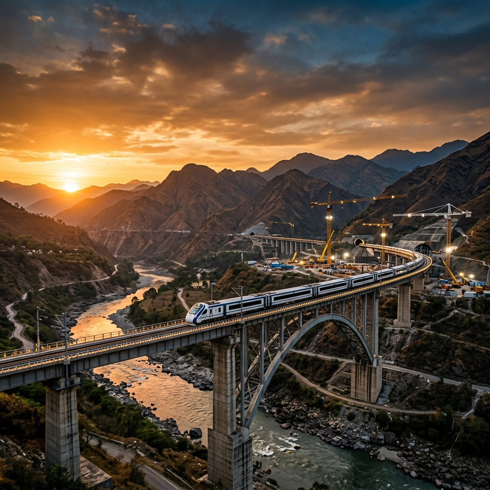
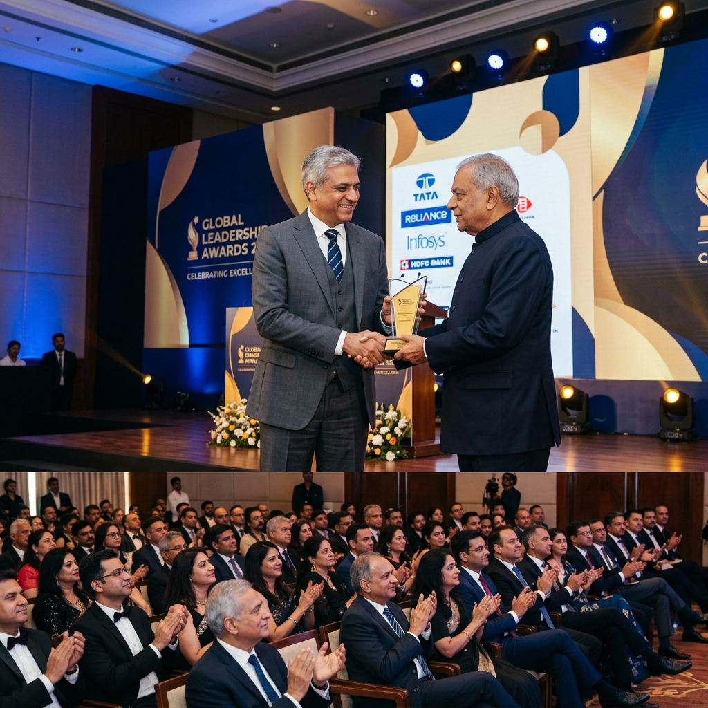
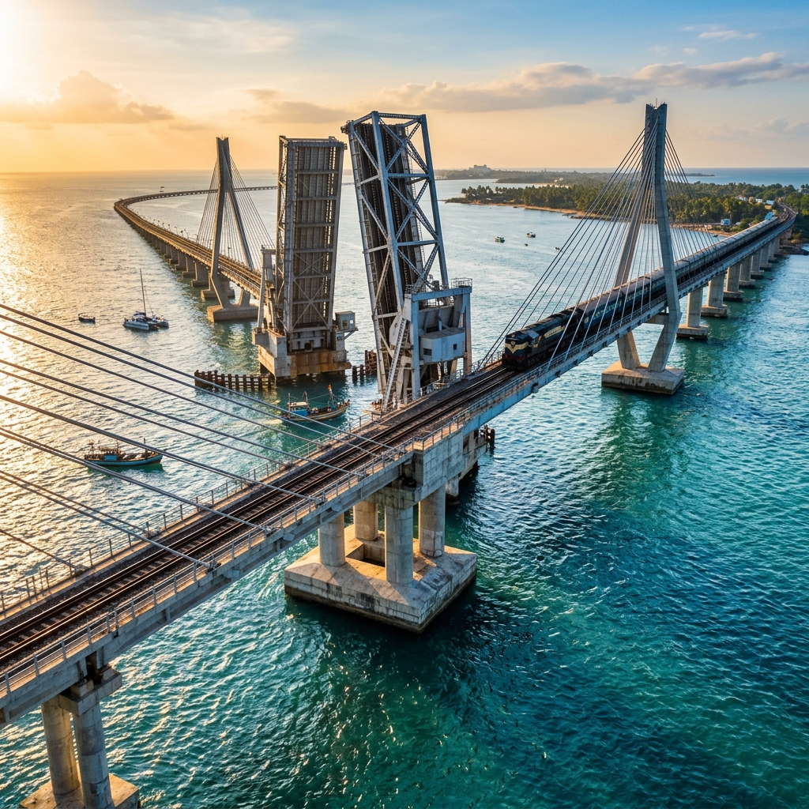
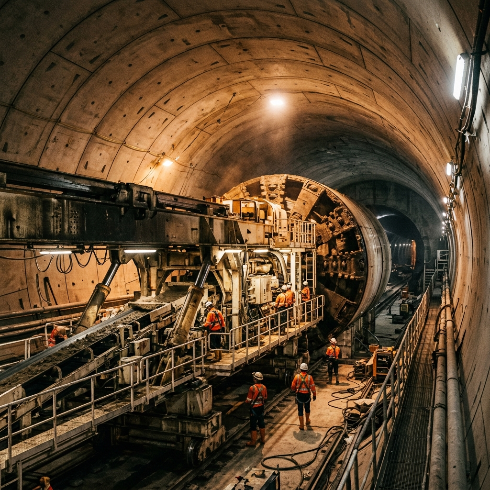
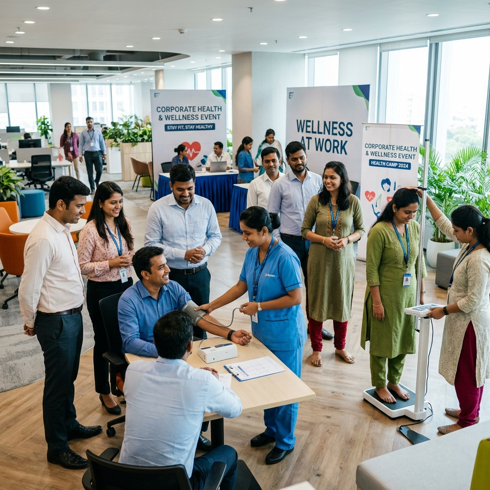

I have assumed charge as the Chairman and Managing Director of Rail Vikas Nigam Limited (RVNL). I take this opportunity to place on record my deep appreciation for the visionary leadership of my distinguished predecessors, whose foresight, dedication, and professionalism have significantly strengthened the foundation of this organisation.
As I take on this responsibility, my endeavour is not only to carry forward their rich legacy, but also to lead RVNL towards new frontiers of excellence, achievement, and sustainable growth. Our collective goal is to firmly position RVNL at the pinnacle of infrastructure development, both within India and on the global stage.
RVNL publishes a quarterly newsletter titled "RVNL Mirror". This publication serves as a valuable platform for the exchange of ideas and for disseminating information on the company's diverse activities, achievements, and innovations among employees and stakeholders. I am happy to present the January–March 2026 edition of RVNL Mirror, which encapsulates the progress, milestones, and collective efforts that defined this period.
During this period, significant advancements were achieved across our railway and urban infrastructure projects. These include steady progress in the Vande Bharat Sleeper trainset manufacturing ecosystem, major tunnelling milestones in the Rishikesh–Karnaprayag Rail Project, and sustained momentum in flagship projects such as Kolkata Metro Line, Pune Metro extension, and Chennai Metro Corridor.
This quarter also witnessed RVNL actively representing India's infrastructure capabilities at key national and international industry platforms, with our participation in IREE 2025 held from 15–17 October. Director (Operations) showcased RVNL's project innovations, adoption of advanced technologies, and ongoing transformation initiatives. RVNL also participated in the inaugural session of the Tunnels & Bridges Conference 2025, organised by FICCI.
Looking ahead, RVNL's strategic vision is to consolidate its leadership in domestic infrastructure development while steadily expanding its presence in international markets. These accomplishments and aspirations reflect the dedication, teamwork, and forward-looking spirit of the entire RVNL family.
With warm regards,
Shri Saleem Ahmad
Chairman & Managing Director, Rail Vikas Nigam Limited
Rail Vikas Nigam Limited (RVNL) relocates its registered and corporate office to World Trade Center.
Read moreIn a major development, a joint venture to advance India's rail manufacturing landscape has been formalised.
Read moreRVNL awarded at the Build India Infra Awards 2026 for the landmark Pamban Bridge project.
Read moreRail Vikas Nigam Limited (RVNL) was honored at the 12th PHDCCI Global Rail & Metro Convention, held at PHD House, New Delhi.
Read moreRail Vikas Nigam Ltd–GPT joint venture has emerged as the lowest bidder for a major infrastructure project awarded by Northern Railway.
Read moreAn inspiring transformation session conducted by Captain Yashika Hatwal Tyagi, reinforcing leadership and organisational growth.
Read moreIn a major development for India's railway and infrastructure sector, Texmaco Rail & Engineering Limited and Rail Vikas Nigam Limited have executed a Strategic Joint Venture.
Read moreRVNL has received LOA from Northern Railway for Design and Construction of New Rail Cum Road Bridge No. 11 over river Ganga, 50 Meters downstream.
Read moreRail Vikas Nigam Limited (RVNL) has received a Letter of Acceptance (LoA) from Central Railway for a contract valued at ₹270.22 crore, including applicable taxes.
Read moreRail Vikas Nigam Limited said it has received a Letter of Acceptance from East Coast Railway for setting up a wagon Periodical Overhauling (POH) workshop with a capacity of 200 wagons.
Read moreState-owned Rail Vikas Nigam Ltd (RVNL) announced that it has emerged as the lowest bidder (L1) for a contract from South Eastern Railway.
Read moreRail Vikas Nigam Limited (RVNL), a key public sector undertaking under the Ministry of Railways, has emerged as the Lowest Bidder (L1) for a significant infrastructure project.
Read moreRail Vikas Nigam Ltd–GPT joint venture has emerged as the lowest bidder for a major infrastructure project awarded by Northern Railway.
Read moreRail Vikas Nigam Limited (RVNL) was honored at the 12th PHDCCI Global Rail & Metro Convention held at PHD House, New Delhi.

Rail Vikas Nigam Limited (RVNL), a Navratna CPSE under the Ministry of Railways, has received the "Trailblazing Special Infrastructure Award" at the Build India Infra Awards 2026 for the landmark Pamban Bridge project.

Rail Vikas Nigam Limited (RVNL), a Navratna Central Public Sector Undertaking under the Ministry of Railways, has been conferred with the Champion of Change CSR Award.
Read moreआरआईएनएल ने वर्ष 2021-22 के लिए इस्पात मंत्रालय के इस्पात राजभाषा सम्मान प्रथम पुरस्कार जीता।
Read moreState-run Rail Vikas Nigam Limited (RVNL) has reaffirmed its revenue guidance of ₹20,000 to ₹22,000 crore for FY26, as project execution momentum picks up across the portfolio.
Read moreRail Vikas Nigam reports Q3 FY2026 net profit of ₹324 crore, up 4% YoY. Declares ₹1 per share interim dividend. Record date Feb 11. KRCL receivables at ₹1,169 crore.
Read moreThe Rishikesh–Karnaprayag railway project is expected to be completed within the next two years. Currently, the construction on this prestigious rail project is progressing at full swing. PIU–RKSH achieved significant milestones between September 2025 and November 2025, including the handover of Tunnel-2 (6.09 km) for track works, cumulative expenditure of ₹990.21 crore, completion of 1,775.7 m of tunnel excavation, and 13,584.6 m of final lining across main and escape tunnels.
Read more
Kolkata's Purple Line metro project has achieved a key milestone as tunnelling progressed beneath the Royal Calcutta Turf Club (RCTC), part of the iconic Kolkata Race Course, founded in 1847. The TBM DURGA was flagged off on 10.07.2025 to begin tunnelling from Khidderpore to Victoria for the Kolkata Metro, marking a major step in constructing a 1.70 km underground stretch. Equipped to handle Kolkata's challenging soil conditions, the TBM is expected to reach Victoria by May 2026.
Read moreRail Vikas Nigam Limited, which is developing a railway manufacturing unit in 160 acres of area at Kazipet in Telangana, recently completed a successful diesel train trial run on a 13.15 km track to connect the factory to the Indian Railway network. Union Minister Shri G. Kishan Reddy reviewed the Kazipet Railway Manufacturing Unit project being executed by RVNL, expressing satisfaction over the progress, quality of works, and the project's role in strengthening indigenous railway manufacturing under the Aatmanirbhar Bharat vision.
Read moreRVNL continues to integrate cutting-edge technologies across its infrastructure projects to enhance efficiency, safety, and sustainability. From advanced tunnelling techniques using Tunnel Boring Machines (TBMs) to the deployment of IP-based video surveillance systems and modern traction substations, the organisation is leveraging innovation at every stage of execution.
Digital project monitoring tools, automated quality checks, and data-driven planning are enabling faster decision-making and improved project outcomes. RVNL's focus on adopting future-ready engineering solutions reinforces its commitment to delivering world-class infrastructure aligned with global standards.
At RVNL, people are at the core of progress. The organisation continues to foster a work culture built on transparency, collaboration, and continuous learning. Regular training programmes, leadership interactions, wellness initiatives, and employee engagement activities ensure a motivated and future-ready workforce.
Initiatives such as POSH training, health camps, and sports activities reflect RVNL's commitment to employee well-being and inclusivity. By nurturing talent and encouraging innovation, RVNL is steadily strengthening its position as a preferred workplace in the infrastructure sector.
13th – 15th January 2026 | Venue: RVNL Corporate Office (Delhi) | Reporting Time: 10:00 AM | Project: RVNL | BharatNet

RVNL inaugurated its stall at IREE, displaying iconic project models like the Pamban Bridge, Cable-Stayed Bridge, and Rishikesh TBM, attracting strong industry footfall and highlighting its technological capabilities in railway infrastructure.
Read moreMr. Mritunjay Pratap Singh, Director-Operations (RVNL) emphasized the Pamban Bridge's corrosion-resistant design and 35+ year coating lifespan, underscoring early EIAs, wildlife assessments, and minimal-impact strategies as crucial for sustainable, future-ready infrastructure.
Read moreA fast-growing engineering firm with a ₹1-lakh-crore order book is transitioning beyond rail execution, winning competitive bids and eyeing major projects like Vande Bharat, drawing comparisons with L&T.
Read moreIn his interview, Mr. Saroj Kanta Patra highlights RVNL's transformative projects in Odisha—from faster coal evacuation to rail doubling and road expansion—positioning the PSU for Maharatna status and driving India's infrastructure growth.
Read moreRVNL has emerged as the Lowest Bidder for designing, supplying, erecting, testing, and commissioning 2×25kV traction substations and associated systems in the Jolarpettai–Salem section under Mission 3000MT.
Read moreRVNL signed an MoU with Visakhapatnam Port Authority for ₹5.35 billion infrastructure projects, marking its strategic shift from rail-focused development to integrated, multimodal infrastructure in line with its 'From Rail Infra to All Infra' vision.
Read moreRVNL has emerged as the Lowest Bidder for designing, modifying, supplying, erecting, testing, and commissioning 220/132kV Scott-connected traction substations and SCADA systems between Bina and RTA, awarded by West Central Railway.
Read moreRVNL observed World Quality Month at its Pune Metro Reach–1 Extension Project, aligning with the global theme "Quality: Think Differently." The initiative highlighted innovation, quality assurance, and best practices.
Read moreAppointments Committee of the Cabinet has approved the appointment of Shri Mukesh Kumar, ITS (1995), as CVO in Rail Vikas Nigam Ltd. (RVNL), Delhi.
Read moreMarking World Cancer Day, RVNL conducted a Health Camp at its Corporate Office in collaboration with Medanta Hospital, Gurugram. The initiative featured health screenings and an expert talk on cancer prevention & early diagnosis, strengthening awareness and preventive healthcare at the workplace.
Read moreRail Vikas Nigam Limited successfully conducted an in-house POSH training programme on 19 Feb 2026 at Corporate Office, New Delhi. We thank Advocate Ms. Salu Sharma for an insightful session attended by over 250 officers, staff, outsourced personnel and PIUs via VC.
Read moreRail Vikas Nigam Limited organized a Badminton Tournament – Singles & Doubles (Men & Women) at the Gymkhana Club, AIIMS, encouraging a culture of fitness, camaraderie and work-life balance among employees.
Read moreHon'ble Union Minister reviewed the Kazipet Railway Manufacturing Unit project being executed by RVNL, expressing satisfaction over the progress, quality of works, and the project's role in strengthening indigenous railway manufacturing under the Aatmanirbhar Bharat vision.
Read moreRVNL is eliminating critical level crossings under the Secunderabad–Mahbubnagar Doubling Project through the construction of Road Under Bridges, enhancing rail safety, operational efficiency, and seamless train movement in line with Indian Railways' national safety mission.
Read moreThe TBM DURGA was flagged off on 10.07.2025 to begin tunneling from Khidderpore to Victoria for the Kolkata Metro, marking a major step in constructing a 1.70 km underground stretch. Equipped to handle Kolkata's challenging soil conditions, the TBM is expected to reach Victoria by May 2026.
Read moreRVNL successfully commissioned the 32.251 km Tsunduru–Peddavadlapudi section following CRS inspection on 24–25 September 2025, with high-speed trials validating safe operations up to 110 kmph and a maximum achieved speed of 143 kmph.
Read moreRail Vikas Nigam Limited (RVNL) has achieved a major milestone in Chennai Metro Phase II – Corridor 3 with the completion of over 5,175 metres of diaphragm and slurry wall construction across Packages UG-03, UG-04, and UG-05.
Read moreRVNL is constructing a six-lane elevated Kona Expressway in West Bengal under EPC mode. Despite challenges, work is progressing swiftly, with NHAI and the DRB recently reviewing on-site progress and key issues.
Read moreMajor works progressed across the Kavi Subhash–Sikshatirtha stretch, including PD buildings, architectural finishing at key stations, pile and slab completion at Nabadiganta, and steady advancement of entry structures and finishing works.
Read morePIU–RKSH achieved significant milestones between September 2025 and November 2025, including the handover of Tunnel-2 (6.09km) for track works, cumulative expenditure of ₹990.21 crore, completion of 1,775.7m of tunnel excavation, and 13,584.6m of final lining across main and escape tunnels.
Read moreBetween September and November 2025, major milestones were achieved across bridges, RUBs, ROBs, and embankment works, including completion of PSC slabs, abutment caps, raft casting, and RE wall activities. Significant milestones also included commissioning of a mobile crusher for blanket work, completion of 12 km embankment top, turfing over 1 lakh sqm, girder launching at four bridges, and completion of substructure works for Viaduct 839/1 using slipform technology.
Read moreBetween September and November 2025, steady progress was achieved across multiple tunnels, including underground excavation, pipe-roof installation, rock bolting, shotcrete and invert concrete works, with key breakthroughs completed despite challenging geological conditions.
Read more